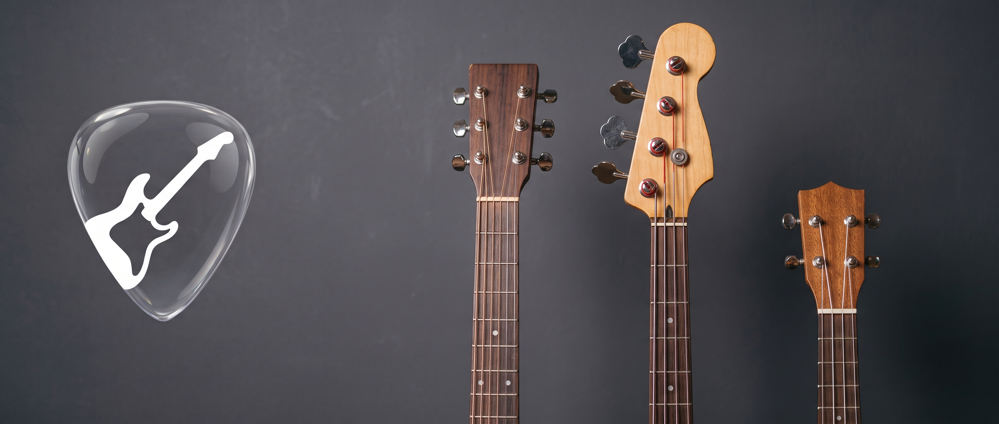

Ready to Tune in Seconds?
Download OpenTune for free on iOS and keep your instruments sounding their best.
Get OpenTune on the App StoreNo cluttered menus. No complicated setup. Open the app, pluck a string, and get instant studio-grade feedback for Guitar, Bass, Ukulele, and Violin.

Everything you need for accurate tuning on stage, in the studio, or at home—without the bloat.
Calibrated for everything from deep 5-string bass frequencies (B0) to bright ukulele and violin overtones with real-time Hz and cent deviation readout.
Pluck any string for automatic target recognition, or tap a specific string card to lock the tuner when restringing a brand-new set.
Switch effortlessly between crisp Light Mode and high-contrast Dark Mode, with automatic screen wake-lock so your display never dims mid-tuning.
Switch from Standard to Drop D, DADGAD, or Low-G Ukulele in a single tap.
Acoustic & electric presets covering standard, drop, and open tunings.
Low-frequency pitch tracking down to B0 (30.87 Hz) with zero lag.
Accurate detection for soprano, concert, and tenor ukuleles.
Responsive fifths tuning for bowed and plucked high-register strings.
Download OpenTune for free on iOS and keep your instruments sounding their best.
Get OpenTune on the App Store